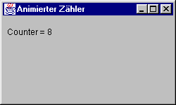
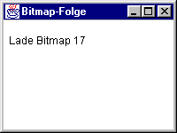
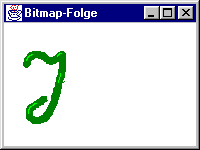
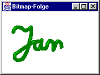
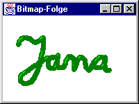
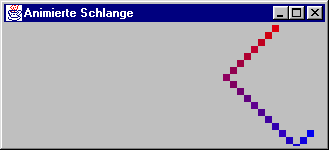
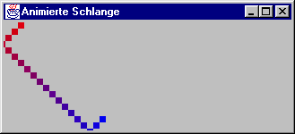
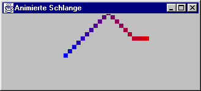
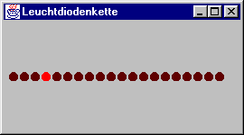
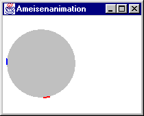

34.2.1 Prinzipielle Vorgehensweise
Das Darstellen einer Animation auf dem Bildschirm ist im Prinzip nichts
anderes als die schnell aufeinanderfolgende Anzeige einer Sequenz
von Einzelbildern. Die Bildfolge erscheint dem menschlichen Auge aufgrund
seiner Trägheit als zusammenhängende Bewegung.
Obwohl die prinzipielle Vorgehensweise damit klar umrissen ist, steckt
die Tücke bei der Darstellung von animierten Bildsequenzen im
Detail. Zu den Problemen, die in diesem Zusammenhang zu lösen
sind, gehören:
- Für die Anzeige der Einzelbilder muss das richtige Timing
gewählt werden. Werden zu wenig Bilder je Zeiteinheit angezeigt,
erscheint das Ergebnis ruckelig. Werden zu viele gezeigt, kann es
sein, dass paint-Events
verlorengehen und Teile des Bilds nicht korrekt angezeigt werden.
- Wird zur Anzeige der Einzelbilder der normale paint-/repaint-Mechanismus
von Java verwendet, wird die Darstellung durch ein starkes Flackern
gestört. Wir werden eine Reihe von Techniken kennenlernen, mit
denen dieses Flackern verhindert werden kann.
- Die Darstellung der Einzelbilder darf nicht die Interaktivität
des Programms beeinträchtigen. Vor allem darf die Nachrichtenschleife
nicht blockiert werden. Wir werden lernen, wie man diese Probleme
mit Hilfe separater Threads umgehen kann.
All dies sind Standardprobleme, die vom Programmierer bei der Entwicklung
von Animationen zu lösen sind. Wir werden feststellen, dass Java
dafür durchweg brauchbare Lösungen zu bieten hat und die
Programmierung kleiner Animationen recht einfach zu realisieren ist.
Das Grundprinzip einer Animation besteht darin, in einer Schleife
die Methode repaint
wiederholt aufzurufen. Ein Aufruf von repaint
führt dazu, dass die paint-Methode
aufgerufen wird, und innerhalb von paint
generiert die Anwendung dann die für das aktuelle Einzelbild
benötigte Bildschirmausgabe.
paint
muss sich also merken (oder mitgeteilt bekommen), welches Bild bei
welchem Aufruf erzeugt werden soll. Typischerweise wird dazu ein Schleifenzähler
verwendet, der das gerade anzuzeigende Bild bezeichnet. Nach dem Ausführen
der Ausgabeanweisungen terminiert paint
und der Aufrufer wartet eine bestimmte Zeitspanne. Dann zählt
er den Bildzähler hoch und führt den nächsten Aufruf
von repaint
durch. Dies setzt sich so lange fort, bis die Animation beendet ist
oder das Programm abgebrochen wird.
Das folgende Listing stellt eines der einfachsten Beispiele für
eine Grafikanimation dar:
001 /* Listing3406.java */
002
003 import java.awt.*;
004 import java.awt.event.*;
005
006 public class Listing3406
007 extends Frame
008 {
009 int cnt = 0;
010
011 public static void main(String[] args)
012 {
013 Listing3406 wnd = new Listing3406();
014 wnd.setSize(250,150);
015 wnd.setVisible(true);
016 wnd.startAnimation();
017 }
018
019 public Listing3406()
020 {
021 super("Animierter Zähler");
022 setBackground(Color.lightGray);
023 addWindowListener(new WindowClosingAdapter(true));
024 }
025
026 public void startAnimation()
027 {
028 while (true) {
029 repaint();
030 }
031 }
032
033 public void paint(Graphics g)
034 {
035 ++cnt;
036 g.drawString("Counter = "+cnt,10,50);
037 try {
038 Thread.sleep(1000);
039 } catch (InterruptedException e) {
040 }
041 }
042 }
|
Listing3406.java |
Listing 34.6: Ein animierter Zähler
Das Programm öffnet ein Fenster und zählt in Sekundenabständen
einen Zähler um eins hoch:

Abbildung 34.3: Ein animierter Zähler
Leider hat das Programm einen entscheidenden Nachteil. Die Animation
selbst funktioniert zwar wunderbar, aber das Programm reagiert nur
noch sehr schleppend auf Windows-Nachrichten. Wir wollen zunächst
dieses Problem abstellen und uns ansehen, wie man die repaint-Schleife
in einem eigenen Thread
laufen lässt.
Verwendung von Threads
Um die vorherige Version des Programms zu verbessern, sollte die repaint-Schleife
in einem eigenen Thread
laufen. Zusätzlich ist es erforderlich, die Zeitverzögerung
aus paint
herauszunehmen und stattdessen in die repaint-Schleife
zu verlagern. So bekommt der Haupt-Thread des Animationsprogramms
genügend Zeit, die Bildschirmausgabe durchzuführen, und
kann andere Events bearbeiten.
Dass in einem anderen Thread
eine Endlosschleife läuft, merkt er nur noch daran, dass in regelmäßigen
Abständen repaint-Ereignisse
eintreffen.
Um das Programm auf die Verwendung mehrerer Threads umzustellen, sollte
die Fensterklasse das Interface Runnable
implementieren und eine Instanzvariable vom Typ Thread
anlegen. Dann wird die Methode startAnimation
so modifiziert, dass sie den neuen Thread
instanziert und startet. Die eigentliche repaint-Schleife
wird in die Methode run
verlagert. Schließlich sollte beim Beenden des Programms auch
der laufende Thread
beendet werden. Hier ist die modifizierte Fassung:
001 /* Listing3407.java */
002
003 import java.awt.*;
004 import java.awt.event.*;
005
006 public class Listing3407
007 extends Frame
008 implements Runnable
009 {
010 int cnt = 0;
011
012 public static void main(String[] args)
013 {
014 Listing3407 wnd = new Listing3407();
015 wnd.setSize(250,150);
016 wnd.setVisible(true);
017 wnd.startAnimation();
018 }
019
020 public Listing3407()
021 {
022 super("Animations-Threads");
023 setBackground(Color.lightGray);
024 addWindowListener(new WindowClosingAdapter(true));
025 }
026
027 public void startAnimation()
028 {
029 Thread th = new Thread(this);
030 th.start();
031 }
032
033 public void run()
034 {
035 while (true) {
036 repaint();
037 try {
038 Thread.sleep(1000);
039 } catch (InterruptedException e) {
040 //nichts
041 }
042 }
043 }
044
045 public void paint(Graphics g)
046 {
047 ++cnt;
048 g.drawString("Counter = "+cnt,10,50);
049 }
050 }
|
Listing3407.java |
Listing 34.7: Verwendung von Threads zur Animation
Das so modifizierte Programm erzeugt dieselbe Ausgabe wie das vorige,
ist aber in der Lage, in der gewohnten Weise auf Ereignisse zu reagieren.
Selbst wenn der Aufruf von Thread.sleep
und der Hauptprozess pausenlos mit repaint-Anforderungen
bombardiert würden, könnte das Programm noch normal beendet
werden.
34.2.2 Abspielen einer Folge von Bitmaps
Eine der einfachsten und am häufigsten verwendeten Möglichkeiten,
eine Animation zu erzeugen, besteht darin, die zur Darstellung erforderliche
Folge von Bitmaps aus einer Reihe von Bilddateien zu laden. Jedem
Einzelbild wird dabei ein Image-Objekt
zugeordnet, das vor dem Start der Animation geladen wird. Alle Images
liegen in einem Array oder einem anderen Container und werden in der
repaint-Schleife
nacheinander angezeigt.
Das folgende Programm speichert die 30 anzuzeigenden Einzelbilder
in einem Array arImg, das nach
dem Start des Programms komplett geladen wird. Da dieser Vorgang einige
Sekunden dauern kann, zeigt das Programm den Ladefortschritt auf dem
Bildschirm an:

Abbildung 34.4: Die Ausgabe während des Ladevorgangs
Erst nach dem vollständigen Abschluss des Ladevorgangs, der mit
einem MediaTracker
überwacht wird, beginnt die eigentliche Animation. Die ganzzahlige
Instanzvariable actimage dient
als Zähler für die Bildfolge und wird nacheinander von 0
bis 29 hochgezählt, um dann wieder bei 0 zu beginnen. Nach jedem
Einzelbild wartet das Programm 50 Millisekunden und führt dann
den nächsten Aufruf von repaint
durch:
001 /* Listing3408.java */
002
003 import java.awt.*;
004 import java.awt.event.*;
005
006 public class Listing3408
007 extends Frame
008 implements Runnable
009 {
010 Image[] arImg;
011 int actimage;
012
013 public static void main(String[] args)
014 {
015 Listing3408 wnd = new Listing3408();
016 wnd.setSize(200,150);
017 wnd.setVisible(true);
018 wnd.startAnimation();
019 }
020
021 public Listing3408()
022 {
023 super("Bitmap-Folge");
024 addWindowListener(new WindowClosingAdapter(true));
025 }
026
027 public void startAnimation()
028 {
029 Thread th = new Thread(this);
030 actimage = -1;
031 th.start();
032 }
033
034 public void run()
035 {
036 //Bilder laden
037 arImg = new Image[30];
038 MediaTracker mt = new MediaTracker(this);
039 Toolkit tk = getToolkit();
040 for (int i = 1; i <= 30; ++i) {
041 arImg[i-1] = tk.getImage("images/jana"+i+".gif");
042 mt.addImage(arImg[i-1], 0);
043 actimage = -i;
044 repaint();
045 try {
046 mt.waitForAll();
047 } catch (InterruptedException e) {
048 //nothing
049 }
050 }
051 //Animation beginnen
052 actimage = 0;
053 while (true) {
054 repaint();
055 actimage = (actimage + 1) % 30;
056 try {
057 Thread.sleep(50);
058 } catch (InterruptedException e) {
059 //nichts
060 }
061 }
062 }
063
064 public void paint(Graphics g)
065 {
066 if (actimage < 0) {
067 g.drawString("Lade Bitmap "+(-actimage),10,50);
068 } else {
069 g.drawImage(arImg[actimage],10,30,this);
070 }
071 }
072 }
|
Listing3408.java |
Listing 34.8: Abspielen einer Folge von Bitmaps

Abbildung 34.5: Animation eines Schriftzugs, Schnappschuss 1

Abbildung 34.6: Animation eines Schriftzugs, Schnappschuss 2

Abbildung 34.7: Animation eines Schriftzugs, Schnappschuss 3
34.2.3 Animation mit Grafikprimitiven
Alternativ zur Anzeige von Bilddateien kann jedes Einzelbild der Animation
natürlich auch mit den Ausgabeprimitiven der Klasse Graphics
erzeugt werden. Dies hat den Vorteil, dass der Anwender nicht auf
das Laden der Bilder warten muss. Außerdem ist das Verfahren
flexibler als der bitmap-basierte Ansatz. Der Nachteil ist natürlich,
dass die Grafikoperationen zeitaufwändiger sind und eine zügige
Bildfolge bei komplexen Sequenzen schwieriger zu erzielen ist.
Als Beispiel für diese Art von Animation wollen wir uns die Aufgabe
stellen, eine aus rechteckigen Kästchen bestehende bunte Schlange
über den Bildschirm laufen zu lassen. Sie soll an den Bildschirmrändern
automatisch umkehren und auch innerhalb des Ausgabefensters von Zeit
zu Zeit ihre Richtung wechseln.
Das folgende Programm stellt die Schlange als Vector
von Objekten des Typs ColorRectangle
dar. ColorRectangle ist aus
Rectangle
abgeleitet und besitzt zusätzlich eine Membervariable zur Darstellung
der Farbe des Rechtecks.
Dieses Beispiel folgt dem allgemeinen Architekturschema für Animationen,
das wir auch in den letzten Beispielen verwendet haben. Der erste
Schritt innerhalb von run
besteht darin, die Schlange zu konstruieren. Dazu wird eine Folge
von Objekten der Klasse ColorRectangle
konstruiert und ab Position (100,100)
werden die Objekte horizontal nebeneinander angeordnet. Die Farben
werden dabei so vergeben, dass die Schlange in fließenden Übergängen
von rot bis blau dargestellt wird. Alle Elemente werden in dem Vector
snake gespeichert.
Nachdem die Schlange konstruiert wurde, beginnt die Animation. Dazu
wird die aktuelle Schlange angezeigt, eine Weile pausiert und dann
durch Aufruf der Methode moveSnake
die nächste Position der Schlange berechnet. moveSnake
ist relativ aufwändig, denn hier liegt der Löwenanteil der
»Intelligenz« der Animation. Die Richtung der Bewegung der
Schlange wird durch die Variablen dx
und dy getrennt für die
x- und y-Richtung bestimmt. Steht hier der Wert -1,
bewegt sich die Schlange im nächsten Schritt um die Breite eines
Rechtecks in Richtung kleinerer Koordinaten. Bei 1 vergrößert
sie die Koordinate entsprechend, und wenn der Wert 0 enthalten ist,
verändert sich der zugehörige Koordinatenwert im nächsten
Schritt gar nicht.
dx und dy
werden entweder dann verändert, wenn die Schlange an einem der
vier Bildschirmränder angekommen ist und umkehren muss oder (im
Mittel bei jedem zehnten Schritt) auch auf freier Strecke. Nachdem
auf diese Weise die neue Richtung bestimmt wurde, wird das erste Element
der Schlange auf die neue Position bewegt. Alle anderen Elemente der
Schlange bekommen dann die Position zugewiesen, die zuvor ihr Vorgänger
hatte.
Hier ist der Quellcode zu der Schlangenanimation:
001 /* Listing3409.java */
002
003 import java.awt.*;
004 import java.util.*;
005
006 class ColorRectangle
007 extends Rectangle
008 {
009 public Color color;
010 }
011
012 public class Listing3409
013 extends Frame
014 implements Runnable
015 {
016 //Konstanten
017 private static final int SIZERECT = 7;
018 private static final int SLEEP = 40;
019 private static final int NUMELEMENTS = 20;
020 private static final Color BGCOLOR = Color.lightGray;
021
022 //Instanzvariablen
023 private Thread th;
024 private Vector<ColorRectangle> snake;
025 private int dx;
026 private int dy;
027
028 public static void main(String[] args)
029 {
030 Listing3409 frame = new Listing3409();
031 frame.setSize(200,150);
032 frame.setVisible(true);
033 frame.startAnimation();
034 }
035
036 public Listing3409()
037 {
038 super("Animierte Schlange");
039 setBackground(BGCOLOR);
040 addWindowListener(new WindowClosingAdapter(true));
041 snake = new Vector<ColorRectangle>();
042 }
043
044 public void startAnimation()
045 {
046 th = new Thread(this);
047 th.start();
048 }
049
050 public void run()
051 {
052 //Schlange konstruieren
053 ColorRectangle cr;
054 int x = 100;
055 int y = 100;
056 for (int i=0; i < NUMELEMENTS; ++i) {
057 cr = new ColorRectangle();
058 cr.x = x;
059 cr.y = y;
060 cr.width = SIZERECT;
061 cr.height = SIZERECT;
062 x += SIZERECT;
063 cr.color = new Color(
064 i*(256/NUMELEMENTS),
065 0,
066 240-i*(256/NUMELEMENTS)
067 );
068 snake.addElement(cr);
069 }
070
071 //Vorzugsrichtung festlegen
072 dx = -1;
073 dy = -1;
074
075 //Schlange laufen lassen
076 while (true) {
077 repaint();
078 try {
079 Thread.sleep(SLEEP);
080 } catch (InterruptedException e){
081 //nichts
082 }
083 moveSnake();
084 }
085 }
086
087 public void moveSnake()
088 {
089 Dimension size = getSize();
090 int sizex = size.width-getInsets().left-getInsets().right;
091 int sizey = size.height-getInsets().top-getInsets().bottom;
092 ColorRectangle cr = snake.firstElement();
093 boolean lBorder = false;
094 int xalt, yalt;
095 int xtmp, ytmp;
096
097 //Kopf der Schlange neu berechnen
098 if (cr.x <= 1) {
099 dx = 1;
100 lBorder = true;
101 }
102 if (cr.x + cr.width >= sizex) {
103 dx = -1;
104 lBorder = true;
105 }
106 if (cr.y <= 1) {
107 dy = 1;
108 lBorder = true;
109 }
110 if (cr.y + cr.height >= sizey) {
111 dy = -1;
112 lBorder = true;
113 }
114 if (! lBorder) {
115 if (rand(10) == 0) {
116 if (rand(2) == 0) {
117 switch (rand(5)) {
118 case 0: case 1:
119 dx = -1;
120 break;
121 case 2:
122 dx = 0;
123 break;
124 case 3: case 4:
125 dx = 1;
126 break;
127 }
128 } else {
129 switch (rand(5)) {
130 case 0: case 1:
131 dy = -1;
132 break;
133 case 2:
134 dy = 0;
135 break;
136 case 3: case 4:
137 dy = 1;
138 break;
139 }
140 }
141 }
142 }
143 xalt = cr.x + SIZERECT * dx;
144 yalt = cr.y + SIZERECT * dy;
145 //Rest der Schlange hinterherziehen
146 Enumeration<ColorRectangle> e = snake.elements();
147 while (e.hasMoreElements()) {
148 cr = e.nextElement();
149 xtmp = cr.x;
150 ytmp = cr.y;
151 cr.x = xalt;
152 cr.y = yalt;
153 xalt = xtmp;
154 yalt = ytmp;
155 }
156 }
157
158 public void paint(Graphics g)
159 {
160 ColorRectangle cr;
161 Enumeration<ColorRectangle> e = snake.elements();
162 int inleft = getInsets().left;
163 int intop = getInsets().top;
164 while (e.hasMoreElements()) {
165 cr = e.nextElement();
166 g.setColor(cr.color);
167 g.fillRect(cr.x+inleft,cr.y+intop,cr.width,cr.height);
168 }
169 }
170
171 private int rand(int limit)
172 {
173 return (int)(Math.random() * limit);
174 }
175 }
|
Listing3409.java |
Listing 34.9: Die animierte Schlange

Abbildung 34.8: Die animierte Schlange, Schnappschuss 1

Abbildung 34.9: Die animierte Schlange, Schnappschuss 2

Abbildung 34.10: Die animierte Schlange, Schnappschuss 3
34.2.4 Reduktion des Bildschirmflackerns
Alle bisher entwickelten Animationen zeigen während der Ausführung
ein ausgeprägtes Flackern, das um so stärker ist, je später
ein Bildanteil innerhalb eines Animationsschritts angezeigt wird.
Der Grund für dieses Flackern liegt darin, dass vor jedem Aufruf
von paint
zunächst das Fenster gelöscht wird und dadurch unmittelbar
vor der Ausgabe des nächsten Bilds ganz kurz ein vollständig
leerer Hintergrund erscheint.
Leider besteht die Lösung für dieses Problem nicht einfach
darin, das Löschen zu unterdrücken. Bei einer animierten
Bewegung beispielsweise ist es erforderlich, all die Bestandteile
des vorigen Bilds zu löschen, die im aktuellen Bild nicht mehr
oder an einer anderen Stelle angezeigt werden.
Auch wenn paint
deshalb aufgerufen wird, weil ein bisher verdeckter Bildausschnitt
wieder sichtbar wird, muss natürlich der entsprechende Bildausschnitt
zunächst gelöscht werden, um die Bestandteile des anderen
Fensters zu entfernen. Im Grunde ist es also eine ganz vernünftige
Vorgehensweise, das Fenster vor jedem Aufruf von paint
zu löschen.
Das Flackern kann nun auf unterschiedliche Weise unterdrückt
werden. Die drei gebräuchlichsten Methoden sind folgende:
- den Bildschirm gar nicht zu löschen (was - wie zuvor erwähnt
- problematisch ist)
- nur den wirklich benötigten Teil des Bildschirms zu löschen
- das Verfahren der Doppelpufferung anzuwenden
Jedes dieser Verfahren hat Vor- und Nachteile und kann in verschiedenen
Situationen unterschiedlich gut angewendet werden. Wir werden sie
in den folgenden Unterabschnitten kurz vorstellen und ein Beispiel
für ihre Anwendung geben. Es gibt noch einige zusätzliche
Möglichkeiten, das Flackern zu unterdrücken oder einzuschränken,
wie beispielsweise das Clipping der Ausgabe auf den tatsächlich
veränderten Bereich, aber darauf wollen wir hier nicht näher
eingehen.
Bildschirm nicht löschen
Den Bildschirm überhaupt nicht zu löschen, um das Flackern
zu unterdrücken, ist nur bei nicht bewegten Animationen möglich.
Wir wollen uns als Beispiel für ein Programm, das hierfür
geeignet ist, das folgende Lauflicht ansehen:
001 /* Listing3410.java */
002
003 import java.awt.*;
004 import java.awt.event.*;
005
006 public class Listing3410
007 extends Frame
008 implements Runnable
009 {
010 //Konstanten
011 private static final int NUMLEDS = 20;
012 private static final int SLEEP = 60;
013 private static final int LEDSIZE = 10;
014 private static final Color ONCOLOR = new Color(255,0,0);
015 private static final Color OFFCOLOR = new Color(100,0,0);
016
017 //Instanzvariablen
018 private Thread th;
019 private int switched;
020 private int dx;
021
022 public static void main(String[] args)
023 {
024 Listing3410 frame = new Listing3410();
025 frame.setSize(270,150);
026 frame.setVisible(true);
027 frame.startAnimation();
028 }
029
030 public Listing3410()
031 {
032 super("Leuchtdiodenkette");
033 setBackground(Color.lightGray);
034 addWindowListener(new WindowClosingAdapter(true));
035 }
036
037 public void startAnimation()
038 {
039 th = new Thread(this);
040 th.start();
041 }
042
043 public void run()
044 {
045 switched = -1;
046 dx = 1;
047 while (true) {
048 repaint();
049 try {
050 Thread.sleep(SLEEP);
051 } catch (InterruptedException e){
052 //nichts
053 }
054 switched += dx;
055 if (switched < 0 || switched > NUMLEDS - 1) {
056 dx = -dx;
057 switched += 2*dx;
058 }
059 }
060 }
061
062 public void paint(Graphics g)
063 {
064 for (int i = 0; i < NUMLEDS; ++i) {
065 g.setColor(i == switched ? ONCOLOR : OFFCOLOR);
066 g.fillOval(10+i*(LEDSIZE+2),80,LEDSIZE,LEDSIZE);
067 }
068 }
069 }
|
Listing3410.java |
Listing 34.10: Bildschirmflackern reduzieren bei stehenden Animationen

Abbildung 34.11: Die Lauflichtanimation
Wie kann nun aber das Löschen verhindert werden? Die Lösung
basiert auf der Tatsache, dass bei einem Aufruf von repaint
nicht paint
direkt, sondern update
aufgerufen wird. In der Standardversion der Klasse Component
könnte update
etwa so implementiert sein:
001 public void update(Graphics g)
002 {
003 g.setColor(getBackground());
004 g.fillRect(0, 0, width, height);
005 g.setColor(getForeground());
006 paint(g);
007 }
|
Listing 34.11: Standardimplementierung von update
Zunächst wird die aktuelle Hintergrundfarbe ausgewählt,
um in dieser Farbe ein ausgefülltes Rechteck in der Größe
des Bildschirms zu zeichnen. Erst nach diesem Löschvorgang wird
die Vordergrundfarbe gesetzt und paint
aufgerufen.
Da in Java alle Methodenaufrufe dynamisch gebunden werden, kann das
Löschen dadurch verhindert werden, dass update
durch eine eigene Version überlagert wird, die den Hintergrund
unverändert lässt. Durch einfaches Hinzufügen der folgenden
drei Zeilen kann das Flackern des Lauflichts vollkommen unterdrückt
werden:
001 /* update1.inc */
002
003 public void update(Graphics g)
004 {
005 paint(g);
006 }
|
update1.inc |
Listing 34.12: Modifizierte Version von update
Nur den wirklich benötigten Teil des Bildschirms löschen
Wie schon erwähnt, kann auf das Löschen des Bildschirms
nur dann komplett verzichtet werden, wenn die Animation keine Bewegung
enthält. Ist sie dagegen bewegt, kann es sinnvoll sein, nur die
Teile des Bilds zu löschen, die beim aktuellen Animationsschritt
leer sind, im vorigen Schritt aber Grafikelemente enthielten.
Um welche Teile der Grafik es sich dabei handelt, ist natürlich
von der Art der Animation abhängig. Zudem muss jeder Animationsschritt
Informationen über den vorigen Schritt haben, um die richtigen
Stellen löschen zu können. Ein Beispiel, bei dem diese Technik
gut angewendet werden kann, ist die bunte Schlange aus dem Abschnitt
»Animation mit Grafikprimitiven«.
Da die Schlange bei jedem Schritt einen neuen Kopf bekommt und alle
anderen Elemente die Plätze ihres jeweiligen Vorgängers
einnehmen, verbleibt als einziges wirklich zu löschendes Element
das letzte Element der Schlange aus dem vorherigen Animationsschritt
übrig. Dessen Position könnte man sich bei jedem Schritt
merken und im nächsten Schritt in der Hintergrundfarbe neu zeichnen.
Noch einfacher geht es, indem man an die Schlange einfach ein zusätzliches
unsichtbares Element anhängt. Wird nämlich das letzte Element
grundsätzlich in der Hintergrundfarbe dargestellt, hinterlässt
es keine Spuren auf dem Bildschirm und braucht damit auch nicht explizit
gelöscht zu werden! Wir brauchen also nur hinter die for-next-Schleife
zur Konstruktion der Schlange ein weiteres, unsichtbares Element an
den snake-Vector
anzuhängen (in Listing 34.13
in den Zeilen 025 bis 031
eingefügt):
001 /* Schlange2.inc */
002
003 public void run()
004 {
005 //Schlange konstruieren
006 ColorRectangle cr;
007 int x = 100;
008 int y = 100;
009 for (int i=0; i < NUMELEMENTS; ++i) {
010 cr = new ColorRectangle();
011 cr.x = x;
012 cr.y = y;
013 cr.width = SIZERECT;
014 cr.height = SIZERECT;
015 x += SIZERECT;
016 cr.color = new Color(
017 i*(256/NUMELEMENTS),
018 0,
019 240-i*(256/NUMELEMENTS)
020 );
021 snake.addElement(cr);
022 }
023
024 //Löschelement anhängen
025 cr = new ColorRectangle();
026 cr.x = x;
027 cr.y = y;
028 cr.width = SIZERECT;
029 cr.height = SIZERECT;
030 cr.color = BGCOLOR;
031 snake.addElement(cr);
032
033 //Vorzugsrichtung festlegen
034 dx = -1;
035 dy = -1;
036
037 //Schlange laufen lassen
038 while (true) {
039 repaint();
040 try {
041 Thread.sleep(SLEEP);
042 } catch (InterruptedException e){
043 //nichts
044 }
045 moveSnake();
046 }
047 }
|
Schlange2.inc |
Listing 34.13: Modifizierte Schlangenanimation
Wird nun zusätzlich die Methode update
überlagert, wie es auch im vorigen Abschnitt getan wurde, läuft
die Schlange vollkommen flackerfrei.
Das Doppelpuffern bietet sich immer dann an, wenn die beiden vorigen
Methoden versagen. Das kann beispielsweise dann der Fall sein, wenn
es bei einer bewegten Animation zu aufwändig ist, nur den nicht
mehr benötigten Teil der Bildschirmausgabe zu löschen, oder
wenn der aktuelle Animationsschritt keine Informationen darüber
besitzt, welcher Teil zu löschen ist.
Beim Doppelpuffern wird bei jedem Animationsschritt zunächst
die gesamte Bildschirmausgabe in ein Offscreen-Image
geschrieben. Erst wenn alle Ausgabeoperationen abgeschlossen sind,
wird dieses Offscreen-Image auf die Fensteroberfläche kopiert.
Im Detail sind dazu folgende Schritte erforderlich:
- Das Fensterobjekt beschafft sich durch Aufruf von createImage
ein Offscreen-Image und speichert es in einer Instanzvariablen.
- Durch Aufruf von getGraphics
wird ein Grafikkontext zu diesem Image beschafft.
- Alle Bildschirmausgaben (inklusive Löschen des Bildschirms)
gehen zunächst auf den Offscreen-Grafikkontext.
- Wenn alle Ausgabeoperationen abgeschlossen sind, wird das Offscreen-Image
mit drawImage
in das Ausgabefenster kopiert.
Durch diese Vorgehensweise wird erreicht, dass das Bild komplett aufgebaut
ist, bevor es angezeigt wird. Da beim anschließenden Kopieren
die neuen Pixel direkt über die alten kopiert werden, erscheinen
dem Betrachter nur die Teile des Bilds verändert, die auch tatsächlich
geändert wurden. Ein Flackern, das entsteht, weil Flächen
für einen kurzen Zeitraum gelöscht und dann wieder gefüllt
werden, kann nicht mehr auftreten.
Das folgende Programm ist ein Beispiel für die Anwendung des
Doppelpufferns bei der Ausgabe einer bewegten Animation. Wir wollen
uns dafür die Aufgabe stellen, eine große Scheibe über
den Bildschirm laufen zu lassen, über deren Rand zwei stilisierte
»Ameisen« mit unterschiedlicher Geschwindigkeit in entgegengesetzte
Richtungen laufen.
Das folgende Programm löst diese Aufgabe. Dabei folgt die Animation
unserem bekannten Architekturschema für bewegte Grafik und braucht
hier nicht weiter erklärt zu werden. Um das Flackern zu verhindern,
deklarieren wir zwei Instanzvariablen, dbImage
und dbGraphics:
private Image dbImage;
private Graphics dbGraphics;
Nun können die zum Doppelpuffern erforderlichen Schritte gekapselt
werden, indem wir die Methode update
geeignet überlagern:
001 /* update2.inc */
002
003 public void update(Graphics g)
004 {
005 //Double-Buffer initialisieren
006 if (dbImage == null) {
007 dbImage = createImage(
008 this.getSize().width,
009 this.getSize().height
010 );
011 dbGraphics = dbImage.getGraphics();
012 }
013 //Hintergrund löschen
014 dbGraphics.setColor(getBackground());
015 dbGraphics.fillRect(
016 0,
017 0,
018 this.getSize().width,
019 this.getSize().height
020 );
021 //Vordergrund zeichnen
022 dbGraphics.setColor(getForeground());
023 paint(dbGraphics);
024 //Offscreen anzeigen
025 g.drawImage(dbImage,0,0,this);
026 }
|
update2.inc |
Listing 34.14: update-Methode mit Doppelpufferung
Falls nicht schon geschehen, werden hier zunächst die beiden
Variablen dbImage und dbGraphics
initialisiert. Anschließend wird der Hintergrund gelöscht,
wie es auch in der Standardversion von update
der Fall ist. Im Gegensatz zu dieser erfolgt das Löschen aber
auf dem Offscreen-Image und ist somit für den Anwender nicht
zu sehen. Nun wird paint
aufgerufen und bekommt anstelle des normalen den Offscreen-Grafikkontext
übergeben. Ohne selbst etwas davon zu wissen, sendet paint
damit alle seine Grafikbefehle auf das Offscreen-Image. Nachdem paint
beendet wurde, wird durch Aufruf von drawImage
das Offscreen-Image auf dem Bildschirm angezeigt.
Hier ist der komplette Quellcode des Programms:
001 /* Listing3415.java */
002
003 import java.awt.*;
004
005 public class Listing3415
006 extends Frame
007 implements Runnable
008 {
009 private int actx;
010 private int dx;
011 private int actarc1;
012 private int actarc2;
013 private Image dbImage;
014 private Graphics dbGraphics;
015
016 public static void main(String[] args)
017 {
018 Listing3415 frame = new Listing3415();
019 frame.setSize(210,170);
020 frame.setVisible(true);
021 frame.startAnimation();
022 }
023
024 public Listing3415()
025 {
026 super("Ameisenanimation");
027 addWindowListener(new WindowClosingAdapter(true));
028 }
029
030 public void startAnimation()
031 {
032 Thread th = new Thread(this);
033 th.start();
034 }
035
036 public void run()
037 {
038 actx = 0;
039 dx = 1;
040 actarc1 = 0;
041 actarc2 = 0;
042 while (true) {
043 repaint();
044 actx += dx;
045 if (actx < 0 || actx > 100) {
046 dx = -dx;
047 actx += 2*dx;
048 }
049 actarc1 = (actarc1 + 1) % 360;
050 actarc2 = (actarc2 + 2) % 360;
051 try {
052 Thread.sleep(40);
053 } catch (InterruptedException e) {
054 //nichts
055 }
056 }
057 }
058
059 public void update(Graphics g)
060 {
061 //Double-Buffer initialisieren
062 if (dbImage == null) {
063 dbImage = createImage(
064 this.getSize().width,
065 this.getSize().height
066 );
067 dbGraphics = dbImage.getGraphics();
068 }
069 //Hintergrund löschen
070 dbGraphics.setColor(getBackground());
071 dbGraphics.fillRect(
072 0,
073 0,
074 this.getSize().width,
075 this.getSize().height
076 );
077 //Vordergrund zeichnen
078 dbGraphics.setColor(getForeground());
079 paint(dbGraphics);
080 //Offscreen anzeigen
081 g.drawImage(dbImage,0,0,this);
082 }
083
084 public void paint(Graphics g)
085 {
086 int xoffs = getInsets().left;
087 int yoffs = getInsets().top;
088 g.setColor(Color.lightGray);
089 g.fillOval(xoffs+actx,yoffs+20,100,100);
090 g.setColor(Color.red);
091 g.drawArc(xoffs+actx,yoffs+20,100,100,actarc1,10);
092 g.drawArc(xoffs+actx-1,yoffs+19,102,102,actarc1,10);
093 g.setColor(Color.blue);
094 g.drawArc(xoffs+actx,yoffs+20,100,100,360-actarc2,10);
095 g.drawArc(xoffs+actx-1,yoffs+19,102,102,360-actarc2,10);
096 }
097 }
|
Listing3415.java |
Listing 34.15: Animation mit Doppelpufferung
Ein Schnappschuss des laufenden Programms sieht so aus (die beiden
»Ameisen« sind in der Abbildung etwas schwer zu erkennen,
im laufenden Programm sieht man sie besser):

Abbildung 34.12: Eine Animation mit Doppelpufferung
Durch die Kapselung des Doppelpufferns können Programme sogar
nachträglich flackerfrei gemacht werden, ohne dass in den eigentlichen
Ausgaberoutinen irgendetwas geändert werden müsste. Man
könnte beispielsweise aus Frame
eine neue Klasse DoubleBufferFrame
ableiten, die die beiden privaten Membervariablen dbImage
und dbGraphics besitzt und update
in der beschriebenen Weise implementiert. Alle Klassen, die dann von
DoubleBufferFrame anstelle von
Frame
abgeleitet werden, unterstützen das Doppelpuffern ihrer Grafikausgaben
automatisch.